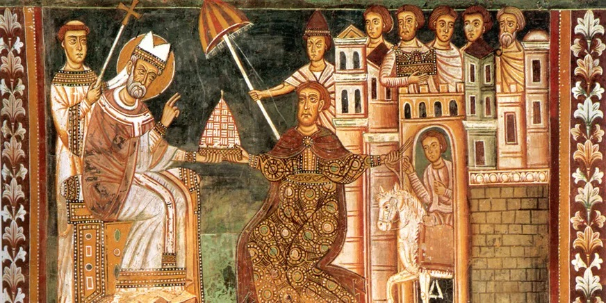

Nuestra Galería de Audios
Escucha mensajes, reflexiones y testimonios de nuestras comunidades.

Folleto #171, ¿Qué es la fe?
Una profunda reflexión sobre la fe y la esperanza en tiempos difíciles.
26 de Junio, 2025
Comunidad "San Juan de Letran"
Folleto #92, La medalla milagrosa
La Medalla Milagrosa es uno de los sacramentales de la Iglesia. Es una representación física de una realidad espiritual.
25 de Mayo, 2025
Comunidad "San Jenaro"